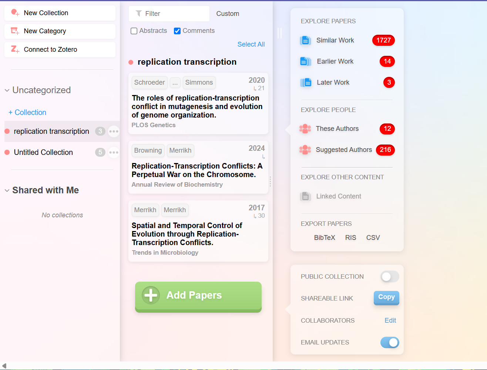

During a recent workshop, I realised how many powerful research tools are freely available online - not just for designing primers but for everything from network mapping to literature searches. I compiled 5 websites that you may or may not be aware of, which can be used for research or to gather data for your studies.
Website: https://www.ncbi.nlm.nih.gov
A database with important resources for bioinformatics tools and services. Major ones include GenBank and the NCBI Bookshelf (really helpful if you are reading a new topic, since all the jargon has hyperlinks).
You can also use tools like BLAST to calculate sequence similarity between biological sequences. It also houses data on all known genes and proteins.
Websites:
https://bioinfogp.cnb.csic.es/tools/venny/
http://www.interactivenn.net/
Use these to make and analyse Venn diagrams of biological data sets. It allows for creation and interactive exploration, with the option to customise colours, fonts and more. It can be used to present the relationship and interactions between gene sets.
Website: https://cytoscape.org
Cytoscape is free software that helps you visualise molecular interaction networks and biological pathways. It allows you to combine these networks with information like annotations and gene expression profiles. You can visualise interactions and relationships between different data points (e.g. genes, proteins, etc).
Website: https://europepmc.org/
Europe PMC is a fantastic resource that gives you free access to more than 9.3 million full-text articles in the biomedical and life sciences field, plus over 43.3 million citations! It's user-friendly and includes handy citation information, along with text mining features that link to various external molecular and medical datasets. It's a great place to dive into research and explore what's out there!
Website: https://www.researchrabbit.ai/
An invaluable tool when researching and wanting to find similar papers, authors, and creating collections for related research papers. Once you add sufficient papers, you can find recommended authors, publications, similar work and even connections between your paper's citations.
BSMS student, majoring in i² Biology at the Indian Institute of Science Education and Research, Thiruvananthapuram.
Expected to graduate by 2028
Posts: 1
Latest post: June 28th
Author has posted only one blog so far